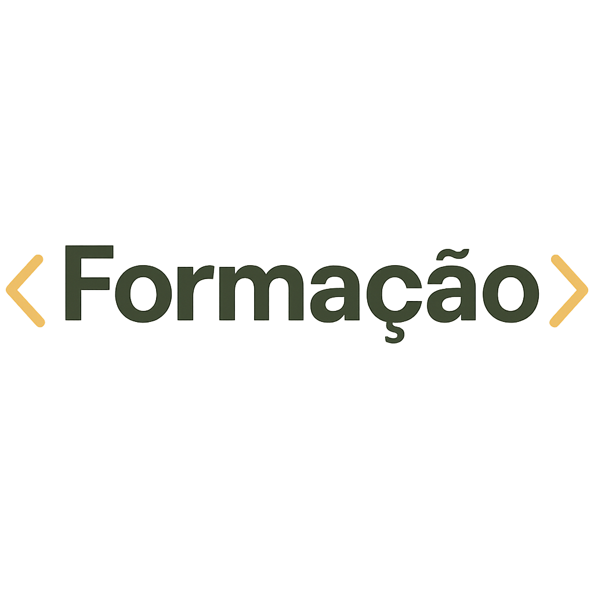

Sou um desenvolvedor em formação, apaixonado por tecnologia e sempre em busca de evolução constante. No meu tempo livre, sou fã de animes, mangás e jogos — desde RPGs imersivos e FPS intensos até jogos de corrida e de tabuleiro. Para equilibrar a mente e o corpo, pratico musculação e gosto de relaxar à noite com uma boa leitura, independentemente do gênero — o que importa é a história me prender.
